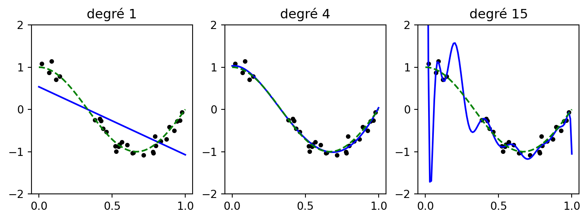
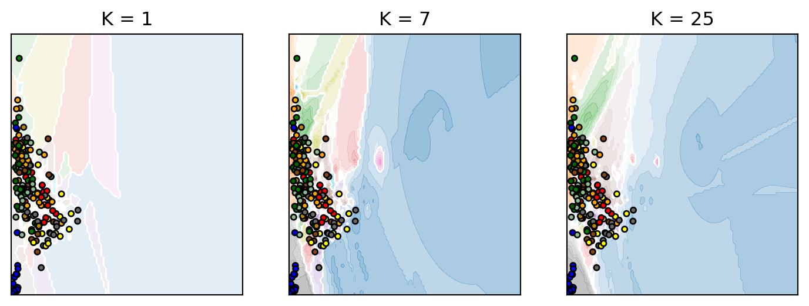
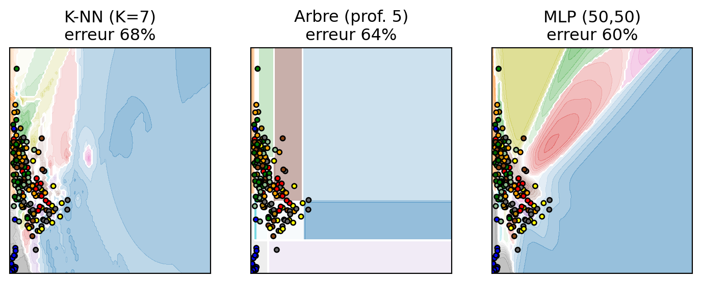
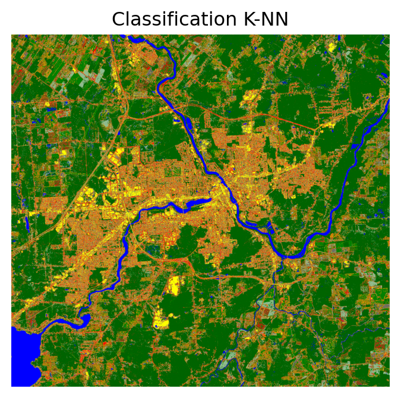
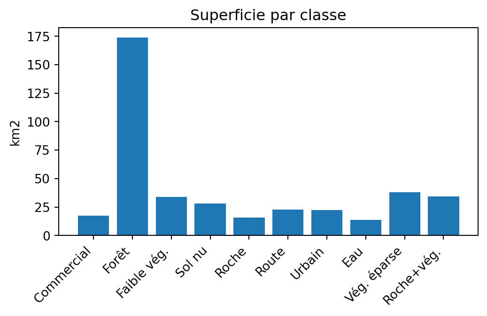

Chapitre 5 — Traitement d’images satellites avec Python
cdist) et un bilan surfacique (bincount)scikit-learn : pipeline, classificateurs, métriques — librairie centrale du chapitrerasterio / rioxarray + geopandas : relier des points étiquetés aux pixels d’une imagescipy.spatial.distance, NumPy : distances et algèbre (K-NN “à la main”, séparabilité JM)rioxarray/xrscipy n’y sont pas préinstallés)RGBNIR_of_S2A.tif : 4 bandes (B, V, R, PIR) — les features du classificateurcarte.tif : carte d’occupation des sols (12 classes) — source de l’échantillonnageberkeley.jpg, SAR.tif : utilisées ailleurs dans le chapitresampling_points.csv : jeu d’entraînement dérivé (points + classe + bandes), réutilisé partout../berkeley.jpg (3, 771, 1311)
../RGBNIR_of_S2A.tif (4, 1926, 2074)
../SAR.tif (2, 1188, 1599)
../carte.tif (1, 1926, 2074)from sklearn.pipeline import make_pipeline
from sklearn.preprocessing import PolynomialFeatures
from sklearn.linear_model import LinearRegression
rng = np.random.RandomState(0)
xs = np.sort(rng.rand(30)); ys = np.cos(1.5*np.pi*xs) + rng.randn(30)*0.1
xg = np.linspace(0, 1, 100)
fig, ax = plt.subplots(1, 3, figsize=(9, 2.8))
for a, deg in zip(ax, [1, 4, 15]):
m = make_pipeline(PolynomialFeatures(deg), LinearRegression()).fit(xs[:, None], ys)
a.plot(xg, m.predict(xg[:, None]), 'b'); a.plot(xg, np.cos(1.5*np.pi*xg), 'g--')
a.scatter(xs, ys, s=10, c='k'); a.set_ylim(-2, 2); a.set_title(f"degré {deg}")
plt.show()
Degré 1 → sous-apprentissage · degré 15 → sur-apprentissage.
carte.tif, 12 classes).csv, réutilisé par tous les classificateursimport rasterio
img_carte = rxr.open_rasterio('../carte.tif', mask_and_scale=True).squeeze()
pts, cls = [], []
for c in range(1, 13): # 12 classes d'occupation du sol
pix = np.argwhere(img_carte.data == c)
n = min(100, len(pix))
idx = np.random.RandomState(0).choice(len(pix), n, replace=False)
pts.extend(pix[idx]); cls.extend([c]*n)
pts = np.array(pts)
print("Points échantillonnés :", pts.shape[0], "sur", len(np.unique(cls)), "classes")
transformer = rasterio.transform.AffineTransformer(img_carte.rio.transform())
xy = transformer.xy(pts[:, 0], pts[:, 1])
with rasterio.open('../RGBNIR_of_S2A.tif') as src:
valeurs = [v for v in src.sample(list(zip(*xy)))]
print("Valeurs de bandes du premier point :", valeurs[0])Points échantillonnés : 1000 sur 10 classes
Valeurs de bandes du premier point : [1894 1994 2112 2318]Avant d’entraîner un modèle : dimensions, nombre de classes, échantillons/classe, séparabilité.
def bhattacharyya(m1, s1, m2, s2):
s = (s1 + s2) / 2
d = m1 - m2
t1 = d @ np.linalg.inv(s) @ d / 8
t2 = 0.5*np.log(np.linalg.det(s) / np.sqrt(np.linalg.det(s1)*np.linalg.det(s2)))
return t1 + t2
def jm(m1, s1, m2, s2):
return 2*(1 - np.exp(-bhattacharyya(m1, s1, m2, s2)))
from sklearn.discriminant_analysis import QuadraticDiscriminantAnalysis as QDA
q = QDA(store_covariance=True).fit(Xtr, ytr)
print("JM(classe 0, classe 1) =", round(jm(q.means_[0], q.covariance_[0], q.means_[1], q.covariance_[1]), 3))JM(classe 0, classe 1) = 1.944from sklearn.metrics import confusion_matrix, classification_report
y_true = ["cat", "ant", "cat", "cat", "ant", "bird", "bird"]
y_pred = ["ant", "ant", "cat", "cat", "ant", "cat", "bird"]
print(confusion_matrix(y_true, y_pred, labels=["ant", "bird", "cat"]))
print(classification_report(y_true, y_pred, target_names=["ant", "bird", "cat"]))[[2 0 0]
[0 1 1]
[1 0 2]]
precision recall f1-score support
ant 0.67 1.00 0.80 2
bird 1.00 0.50 0.67 2
cat 0.67 0.67 0.67 3
accuracy 0.71 7
macro avg 0.78 0.72 0.71 7
weighted avg 0.76 0.71 0.70 7
La plus simple des méthodes non paramétriques : une boîte par classe.
[min, max] de chaque bande, classe par classeVote parmi les \(K\) voisins les plus proches (bandes Rouge–PIR) :
from sklearn.pipeline import Pipeline
from sklearn.preprocessing import StandardScaler
from sklearn.neighbors import KNeighborsClassifier
from sklearn.inspection import DecisionBoundaryDisplay
knn = Pipeline([("s", StandardScaler()), ("knn", KNeighborsClassifier(weights='distance'))])
fig, ax = plt.subplots(1, 3, figsize=(9, 3))
for a, K in zip(ax, [1, 7, 25]):
knn.set_params(knn__n_neighbors=K).fit(Xtr[:, 2:4], ytr)
DecisionBoundaryDisplay.from_estimator(knn, X[:, 2:4], plot_method="contourf",
alpha=0.5, ax=a, cmap=cmap)
a.scatter(Xte[:, 2], Xte[:, 3], c=yte, edgecolors='k', s=12, cmap=cmap)
a.set_title(f"K = {K}"); a.set_xticks([]); a.set_yticks([])
plt.show()
Le K-NN repose sur des distances : cdist les calcule toutes, argmin donne le plus proche voisin — identique à scikit-learn pour \(K = 1\).
from scipy.spatial.distance import cdist
from sklearn.preprocessing import StandardScaler
sc = StandardScaler().fit(Xtr)
D = cdist(sc.transform(Xte), sc.transform(Xtr)) # (n_test, n_train)
y_ppv = ytr[D.argmin(axis=1)] # plus proche voisin
print("Matrice des distances :", D.shape)
print("Exactitude 1-PPV « à la main » :", round((y_ppv == yte).mean(), 3))Matrice des distances : (200, 800)
Exactitude 1-PPV « à la main » : 0.39max_depth contrôle directement la complexité de l’arbreprofondeur=2 - exactitude test : 0.230
profondeur=5 - exactitude test : 0.345
profondeur=None - exactitude test : 0.390Un perceptron multicouche enchaîne des couches dont les poids sont appris :
from sklearn.neural_network import MLPClassifier
from sklearn.pipeline import Pipeline
from sklearn.preprocessing import StandardScaler
mlp = Pipeline([("s", StandardScaler()),
("c", MLPClassifier((50, 50), max_iter=1000, random_state=0))])
mlp.fit(Xtr, ytr)
print("MLP (50, 50) - exactitude :", round(mlp.score(Xte, yte), 3))MLP (50, 50) - exactitude : 0.44Base de l’apprentissage profond (réseaux convolutionnels, tome 2).
from sklearn.tree import DecisionTreeClassifier
from sklearn.neural_network import MLPClassifier
modeles = {
"K-NN (K=7)": Pipeline([("s", StandardScaler()), ("c", KNeighborsClassifier(7, weights='distance'))]),
"Arbre (prof. 5)": DecisionTreeClassifier(max_depth=5, random_state=0),
"MLP (50,50)": Pipeline([("s", StandardScaler()), ("c", MLPClassifier((50, 50), max_iter=1000, random_state=0))]),
}
fig, ax = plt.subplots(1, 3, figsize=(9, 3))
for a, (nom, m) in zip(ax, modeles.items()):
m.fit(Xtr[:, 2:4], ytr)
err = (m.predict(Xte[:, 2:4]) != yte).mean()*100
DecisionBoundaryDisplay.from_estimator(m, X[:, 2:4], plot_method="contourf", alpha=0.5, ax=a, cmap=cmap)
a.scatter(Xte[:, 2], Xte[:, 3], c=yte, edgecolors='k', s=12, cmap=cmap)
a.set_title(f"{nom}\nerreur {err:.0f}%"); a.set_xticks([]); a.set_yticks([])
plt.show()
On applique le modèle (4 bandes) à toute l’image :
clf = Pipeline([("s", StandardScaler()), ("c", KNeighborsClassifier(7, weights='distance'))]).fit(Xtr, ytr)
img = rxr.open_rasterio('../RGBNIR_of_S2A.tif').to_numpy() # (4, H, W)
H, W = img.shape[1], img.shape[2]
carte = clf.predict(img.transpose(1, 2, 0).reshape(H*W, 4)).reshape(H, W)
fig, ax = plt.subplots(figsize=(6, 4))
ax.imshow(carte, cmap=cmap); ax.set_title("Classification K-NN"); ax.axis('off')
plt.show()
np.bincount compte les pixels par classe ; multiplié par la surface d’un pixel (10 m) → superficie.
res = rxr.open_rasterio('../RGBNIR_of_S2A.tif').rio.resolution()
pix_km2 = abs(res[0] * res[1]) / 1e6
comptes = np.bincount(carte.ravel(), minlength=len(noms2))
fig, ax = plt.subplots(figsize=(6, 3))
ax.bar(noms2, comptes * pix_km2); ax.set_ylabel("km2")
ax.set_title("Superficie par classe"); plt.xticks(rotation=45, ha='right')
plt.show()
cdist) ; après coup, bincount donne le bilan surfacique par classeclassification_report du K-NN, de l’arbre et de l’ADQtest_size et observez l’erreur de testFin du volume 1 — Traitement d’images satellites avec Python
Traitement d’images satellites avec Python